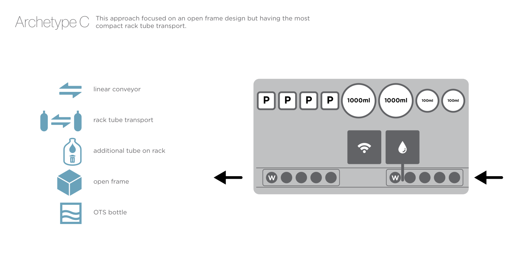
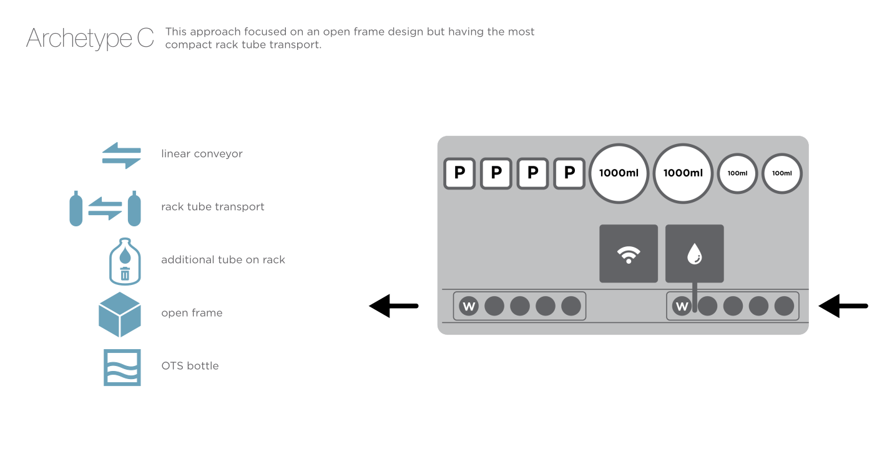
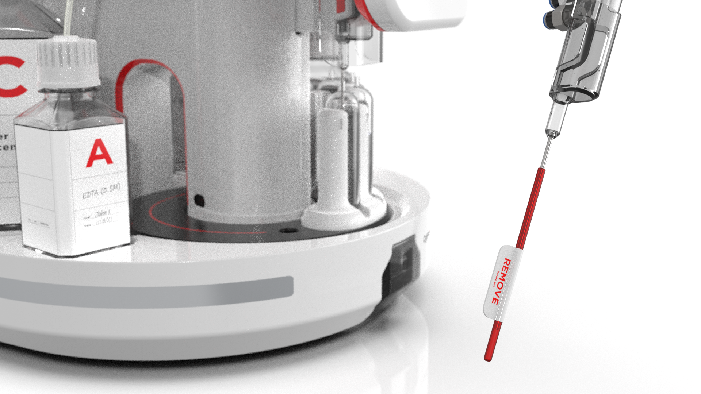
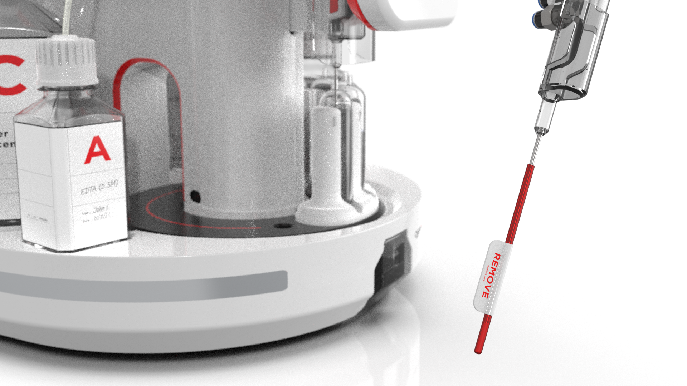

Medical Gradient Mixer
Identifying a design solution that simplifies the process and elevates the user experience.
A medical gradient mixer is a device used to create precise concentrations of mixed solutions, often in laboratory or clinical settings. A client came to us with the idea of designing a new solution to the current offerings available in the laboratory environment. Current solutions are time-consuming, require a lot of supervision and labor from the user, and have the potential for human error involving highly valuable medical samples. The client wanted to address these issues and introduce more automation to the process.
Research
Our team set out to learn and understand the process, what the the requirments were, evaluate current systems and identify opportunities that could be explored for a new and improved alternative.
 

Models
Using the information gathered from the research phase, scale models were created for usability testing. This allowed users to interact with the concepts in the intended environment, helping us understand their interactions, challenges, and overall satisfaction.


Renderings
Feedback from this phase enabled our team to narrow down the concepts to the most viable options. High-quality renderings were then produced to complement the body of work completed thus far, allowing the client to effectively communicate the product's intent and evaluate its form, aesthetics, and brand identity before committing to manufacturing.
CONCEPT 1
 
